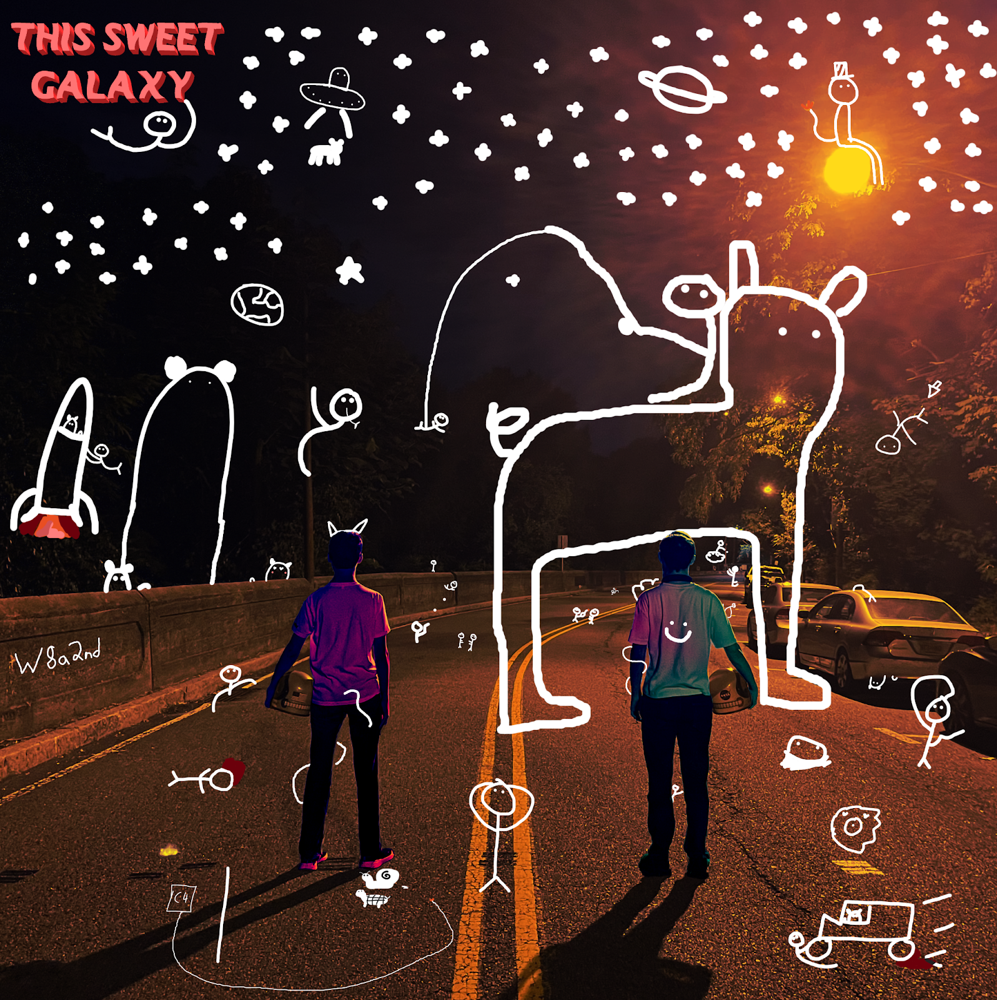
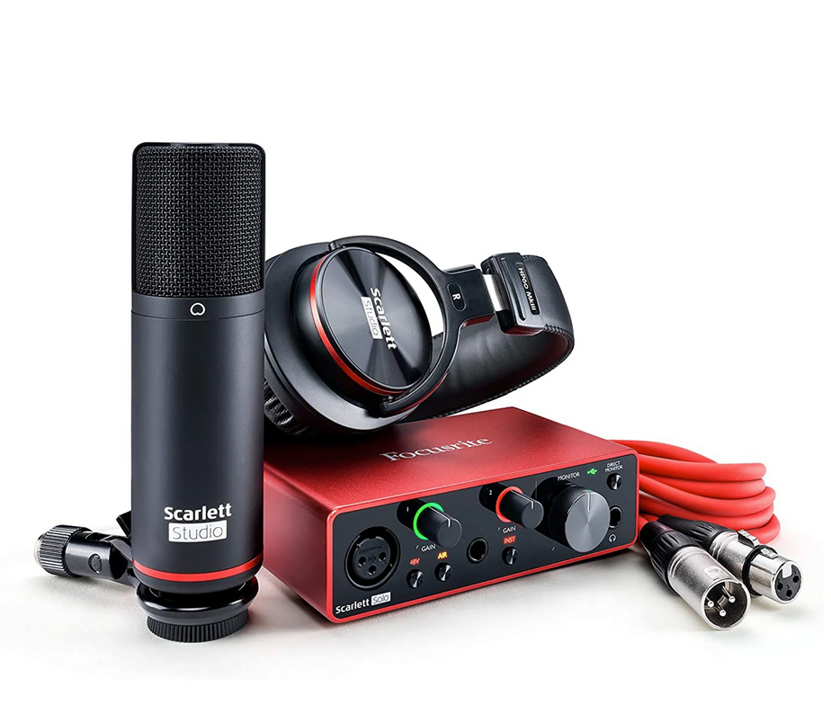
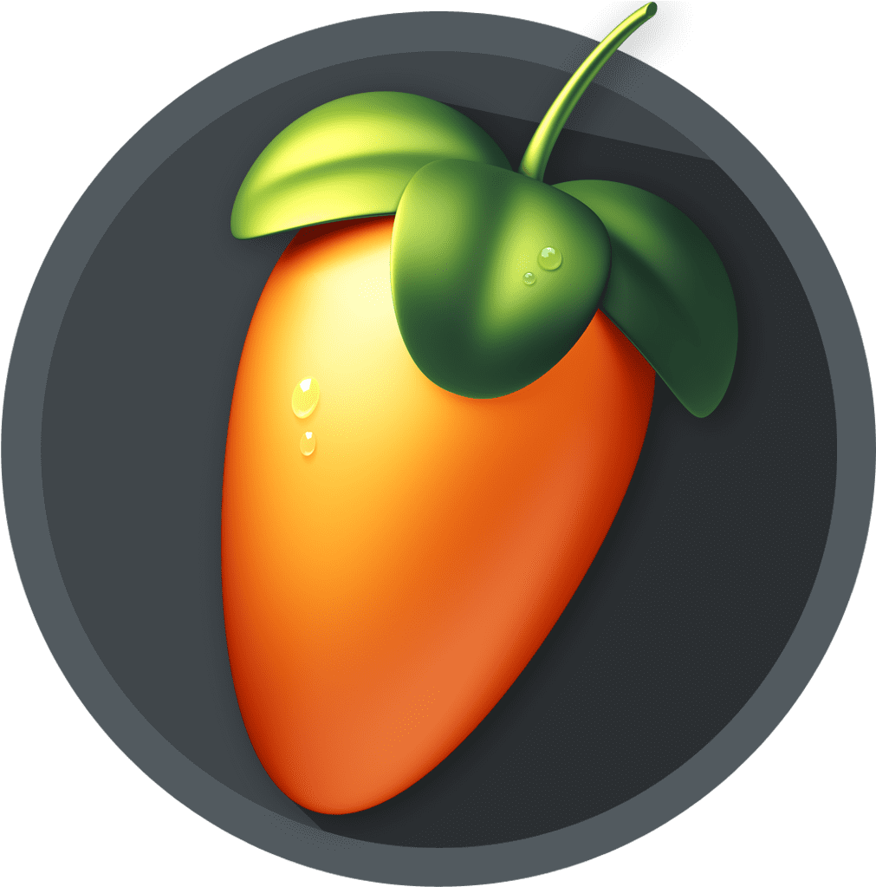
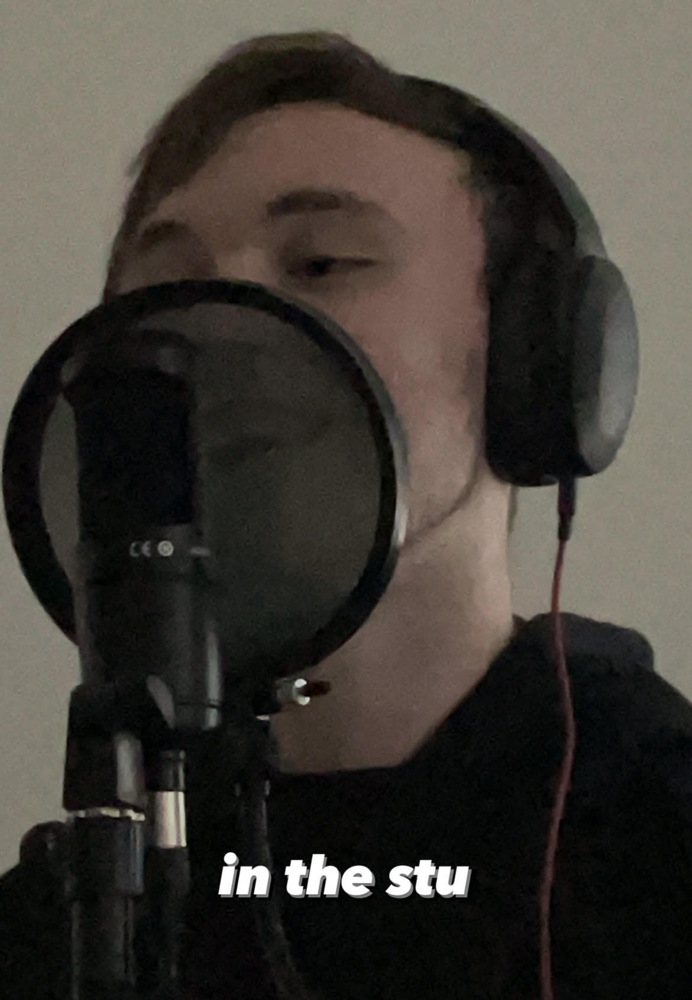
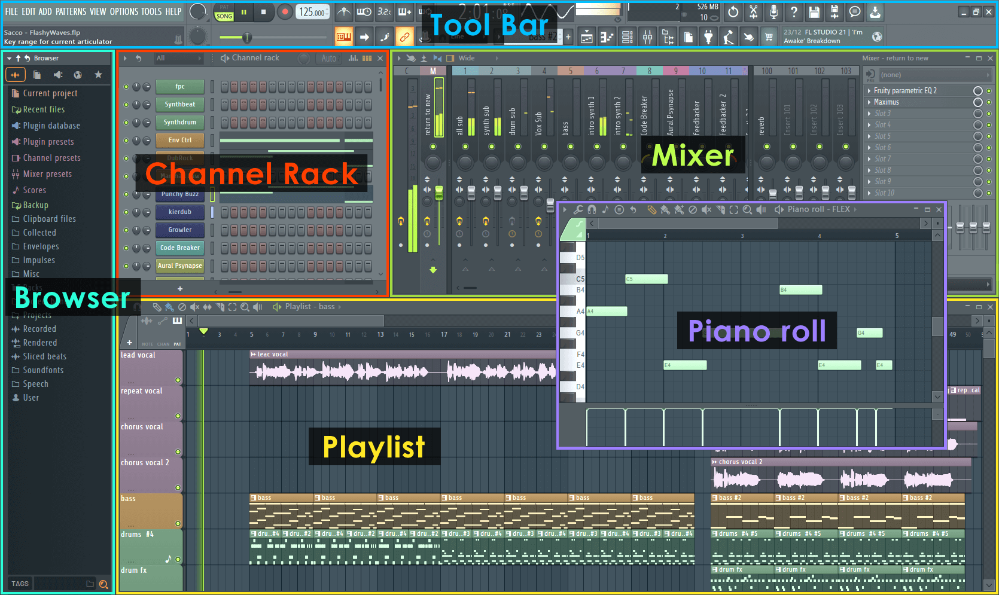
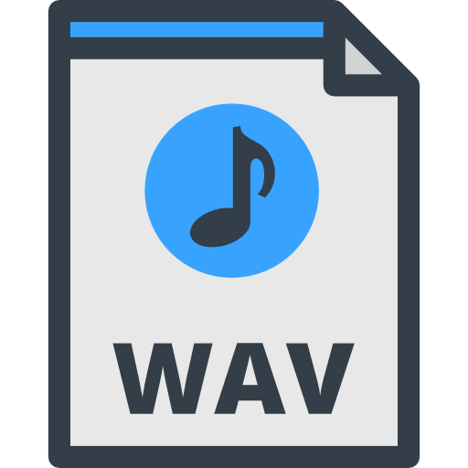
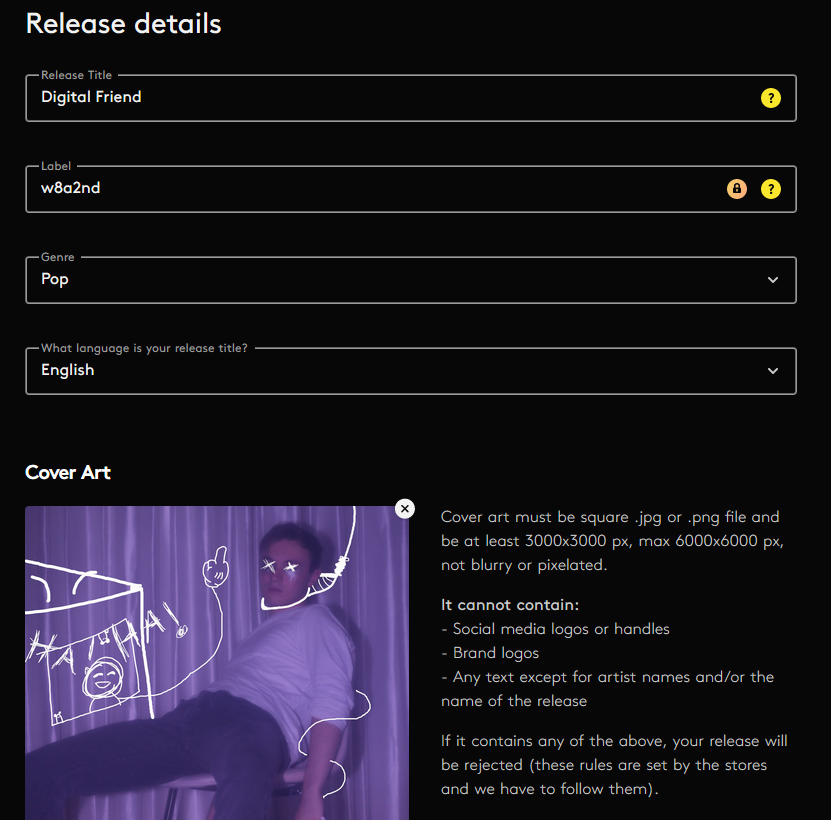
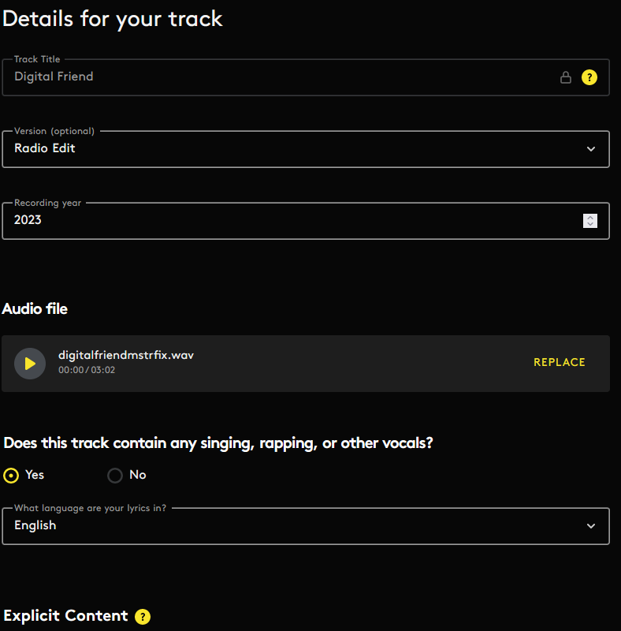
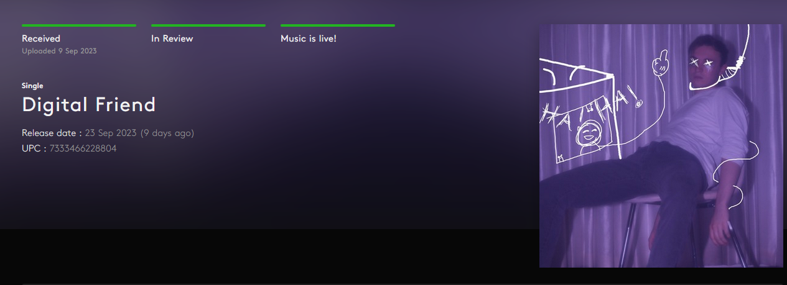

My Music Journey
I started making music at the early age of 12, making simple beats and production. When I turned 14 me and my close friend wanted to try making a joke song together, it took us 8 hours but was some of the most fun we’ve ever had doing anything. This one moment started a massive chain of events. It led to us creating and releasing our first single in 2021, to our debut album in September of 2022. I love making music and it’ll be a passion that’ll always be a part of me.
In the Studio
When I first started recording my music I would leach off my sisters tools, such as her audiobox and studio microphone. Once she left for college me and my friend realized that we’d need to purchase our own set of tools so we could continue making our music.
We each bought ourselves an audiobox and a studio microphone so we could set up our own little home studio.
Now whenever we'd make a song, we would start by making the production in “FL studio”, and would begin writing lyrics for the song after bringing the production onto “Soundtrap”.
After writing the lyrics for the song we began performing and would really start getting our track together.
Finally we would put the finished track into FL studio to mix and master the audio
Releasing Music
Once we made something we were really proud of, we wanted to release it to show the whole world what we created.
Now to begin the process we needed to find a software that allows us to distribute our music all across the globe. We found “Amuse” and decided to stick to it.
To release our music we needed to have it in a .WAV file. which is essentially the highest quality audio file you can currently use.
After downloading our music in the correct file, we needed to give Amuse our song title, label, genre, the language of the title, and our cover art! Now the cover art had to be a square, a .jpg or .png, and be at least 3000x3000 px, max 6000x6000 px.
Next we'd have to put our tracklist, for our first song we just released a single so we only had to put one song down but for our album we put 7 different tracks. Then we needed to give our track(s) additional details. Such as the recorded version, whether or not the track contains any vocals, explicit content, track origin, and the writers.
After that we just clicked on every music streaming software that we could put our music on, every country, the date we wanted the song released, and our song was up for review! Finally our music was live and could be played for the whole world to see.
FAQ
- “Oh you make music?” -Yes!
- “How long have you been making music?” - Around 6 years.
- “How long does each song take to make?” - Some can take days, others weeks, others months, but in terms of hours I'd say they take around 16-18 hours each.
- “What's your favorite song that you've made?” - I love “Sunbleached Wings”.
- “Which artists have inspired you?” - I really love Porter Robinson's music, as well as Coldplay, and overall just many hyperpop artists.
- “How do you get motivated to make music?” - If i'm in the mood, sometimes i'll listen to something and it makes me wanna create, or if I have something I wanna write about.